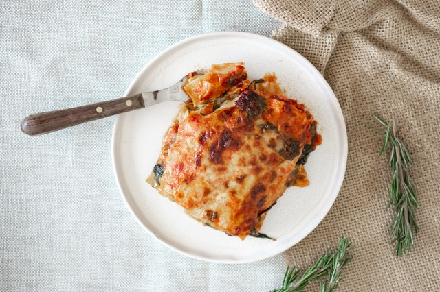

Nossas Receitas
Lasanha à bolonhesa
postado em 12/12/2020
Ingredientes
- 3 colheres de margarina.
- 4 colheres de farinha de trigo.
- 2 xícaras de leite.
- 2 xícaras de creme de leite.
- sal e noz-moscada a gosto.
- 1 colher de óleo.
- 2 dentes de alho amassados.
- 1 cebola picada.
- 300 g de carne moída.
- 3 xícaras de polpa de tomate batida no liquidificador.
- 3/4 xícara de água quente.
- sal a gosto.
- 200 g de presunto fatiada.
- 200 g de mussarela fatiada.
- 250 g de massa para lasanha.
Modo de Preparo
- Molho branco:
- Derreta a margarina e doure a farinha em fogo baixo mexendo sempre, junte o leite aos poucos.
- Cozinhe até obter um molho encorpado, acrescente o creme de leite e tempere com sal e noz-moscada.
- Reserve.
- Molho a bolonhesa:
- Aqueça o óleo junte o alho e a cebola até dourar.
- Acrescente a carne moída até fritar, quando a carne estiver frita acrescente a polpa de tomate e a água misture o sal e cozinhe até ferver.
- Montagem:
- Em um refratário grande, coloque uma camada de molho à bolonhesa, massa para lasanha, presunto, mussarela, molho branco.
- Adicione mais massa para lasanha presunto e mussarela e termine com molho à bolonhesa.
- Se quiser, polvilhe um pouco de queijo parmesão ralado e leve ao forno para gratinar por 20 minutos.
Coxinha
postado em 12/12/2020Ingredientes
- Massa:
- 1 xícara (chá) de água
- 2 xícaras (chá) de leite
- 2 tabletes de caldo de bacon ou costela
- 1/2 xícara (chá) de batata cozida e amassada
- 1 colher (sopa) de manteiga
- 2 e 1/2 xícaras (chá) de farinha de trigo
- margarina para untar a forma
- Para empanar:
- farinha de rosca
- 2 ovos batidos
- óleo para fritar
- Recheio
- 1 e 1/2 kg de frango
- 3 colheres (sopa) de requeijão cremoso
- 2 colheres (sopa) de azeite
- 1 cebola pequena
- 2 dentes de alho
- tempero a gosto
Modo de Preparo
- Recheio:
- Em uma panela, coloque o azeite, o alho picado e a cebola.
- Espere fritar e adicione o frango desfiado e os temperos de sua preferência.
- Refogue tudo por 5 minutos, retire do fogo, acrescente o requeijão, misture e reserve.
- Massa:
- Em uma panela grande, adicione a água, o leite, o tablete de caldo, a batata, a manteiga e deixe ferver. Acrescente a farinha de trigo de uma só vez, mexendo até soltar do fundo da panela.
- Despeje a massa sobre uma superfície lisa e untada, sove bem e deixe esfriar.
- Abra a massa com as mãos, recheie e modele em forma de coxinha.
- Passe a massa modelada pelo ovo batido e pela farinha de rosca.
- Frite em óleo quente até dourar e escorra sobre papel absorvente.
Bolo de Chocolate
postado em 12/12/2020
Ingredientes
- 1 xícara (chá) de leite
- 1 xícara (chá) de óleo
- 2 xícara (chá) de farinha de trigo
- 1 xícara (chá) de chocolate ou achocolatado
- 1 xícara (chá) de açúcar
- 2 ovos
- 1 colher (sopa) de fermento em pó
Modo de Preparo
- Bata no liquidificador os ovos por 5 minutos.
- Acrescente aos poucos os demais ingredientes, exceto o fermento.
- Depois de bater acrescente então o fermento.
- Coloque em uma forma média untada e enfarinhada.
- Leve para assar em forno médio, pré-aquecido por 45 minutos, ou até dourar.
Pudim
postado em 29/06/2021Ingredientes
- Pudim:
- 1 lata de leite condensado
- 1 lata de leite (medida da lata de leite condensado)
- 3 ovos inteiros
- Calda:
- 1 xícara (chá) de açúcar
- 1/2 xícara de água
Modo de Preparo
- Pudim:
- Primeiro, bata bem os ovos no liquidificador.
- Acrescente o leite condensado e o leite, e bata novamente.
- Calda:
- Derreta o açúcar na panela até ficar moreno, acrescente a água e deixe engrossar.
- Coloque em uma forma redonda e despeje a massa do pudim por cima.
- Asse em forno médio por 45 minutos, com a assadeira redonda dentro de uma maior com água.
- Espete um garfo para ver se está bem assado.
- Deixe esfriar e desenforme.